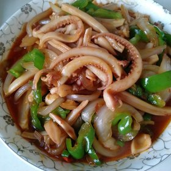

爱厨房
首页
菜谱分类
常用主题
家常菜
快手菜
下饭菜
早餐
减肥
汤羹
烘焙
小吃
常见食材
猪肉
鸡肉
牛肉
鱼
鸡蛋
土豆
茄子
豆腐
时令食材
秋葵
10.0
丝瓜
10.0
西瓜
10.0
苦瓜
10.0
西柚
10.0
空心菜
9.9
葡萄
9.9
冬瓜
9.8
查看全部分类
菜单
作品动态
我的厨房
我的菜单
帐号设置
发现好友
退出
我关注的更新
全站更新
最新上传
正在流行
24小时最佳
自制关东煮
吃完才拍的，好吃，爸爸妈妈都说好吃
4分钟前
0
0
染鹤
(浙江嘉兴)
自制关东煮
吃完才拍的，好吃，爸爸妈妈都说好吃
4分钟前
0
0
染鹤
(浙江嘉兴)

自制关东煮
吃完才拍的，好吃，爸爸妈妈都说好吃
4分钟前
0
0
染鹤
(浙江嘉兴)
自制关东煮
吃完才拍的，好吃，爸爸妈妈都说好吃
4分钟前
0
0
染鹤
(浙江嘉兴)